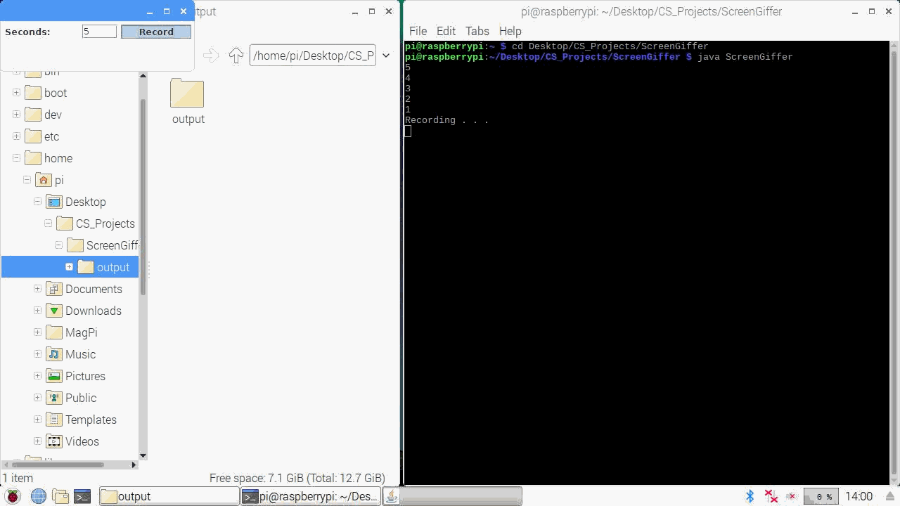

ScreenGiffer is quick weekend a project I embarked on for a few reasons. One reason is that I really did not want to be academically productive, meaning I still have not finished my CS Extended Essay, nor have I finished my Physics Internal Assessment, but schoolwork is outside of the scope of this post. My main reason for creating ScreenGiffer is to record snippets of screen activity on my Raspberry Pi, as I have a few limitation preventing me from using otherwise effective solutions.
A 16GB miniSD card serves as my Rasberry Pi's hard drive, with the Raspbian OS taking a good portion of the space. While 16GB is still sufficient to store personal files alongside OS files, I tend avoid software downloads exceeding 50 MB as a result. Also the Raspberry Pi is not exactly known as being the best at high-performance computing, so processing videos on such a device would not be too fun. In addition, my Raspberry Pi rarely establishes a strong wireless internet connection, so I rarely download any software directly from the internet. I certainly have an ethernet cable, but please let me have the excuse to code my own software on my Raspberry Pi.

Disclaimer: A great amount of code used for this project was not created by me. I merely took implementations I found from articles online to create a solution I could not find on the internet. I will constantly provide references in code comments. All references are also available in the Sources section.
The development of ScreenGiffer was broken down into figuring out how to programmatically do the following:
1. Capture multiple screenshots.
2. Produce a GIF from a series of images.
To capture a screenshot, the following was implemented:
//Classes needed to capture a screenshot
import java.awt.*;
import java.awt.image.*;
//Classes needed to output an image file from an image input
import java.io.*;
import javax.imageio.*;
//Modified from the implementation present here: https://www.codejava.net/java-se/graphics/how-to-capture-screenshot-programmatically-in-java
public class ScreenGiffer
{
public static void main(String args[])
{
try
{
Dimension size = Toolkit.getDefaultToolkit().getScreenSize();
Robot robot = new Robot();
BufferedImage img = robot.createScreenCapture(new Rectangle(size));
File save_path = new File("frame.jpg");
ImageIO.write(img, "JPG", save_path);
}
catch(Exception e)
{
System.out.println("Failed to capture a screenshot.");
}
}
}
We need to take multiple screenshots. Our code will be modified with a for loop:
import java.awt.*;
import java.awt.image.*;
import java.io.*;
import javax.imageio.*;
public class ScreenGiffer
{
public static void main(String args[])
{
try
{
int frames = 50;//Modify this number as you please. 50 frames will provide a 5 second GIF
try
{
for (int i = 0; i < frames; i++)
{
Dimension size = Toolkit.getDefaultToolkit().getScreenSize();
Robot robot = new Robot();
BufferedImage img = robot.createScreenCapture(new Rectangle(size));
File save_path = new File("output/frame" + i + ".jpg");//"output/" is present to organize all frames into a subdirectory labeled "output". Modify this as you please
ImageIO.write(img, "JPG", save_path);
}
}
catch(Exception e)
{
System.out.println("Failed to record.");
}
}
}
}
Now that we can capture multiple images, lets create a GIF. We will first need a GifSequenceWriter class that abstracts the GIF writing process in the main class for us:
//A few more classes, this time for input and output with images and GIFs
import javax.imageio.*;
import javax.imageio.metadata.*;
import javax.imageio.stream.*;
import java.awt.image.*;
import java.io.*;
//Original implementation present here: https://memorynotfound.com/generate-gif-image-java-delay-infinite-loop-example/
public class GifSequenceWriter
{
protected ImageWriter writer;
protected ImageWriteParam params;
protected IIOMetadata metadata;
public GifSequenceWriter(ImageOutputStream out, int imageType, int delay, boolean loop) throws IOException
{
writer = ImageIO.getImageWritersBySuffix("gif").next();
params = writer.getDefaultWriteParam();
ImageTypeSpecifier imageTypeSpecifier = ImageTypeSpecifier.createFromBufferedImageType(imageType);
metadata = writer.getDefaultImageMetadata(imageTypeSpecifier, params);
configureRootMetadata(delay, loop);
writer.setOutput(out);
writer.prepareWriteSequence(null);
}
private void configureRootMetadata(int delay, boolean loop) throws IIOInvalidTreeException
{
String metaFormatName = metadata.getNativeMetadataFormatName();
IIOMetadataNode root = (IIOMetadataNode) metadata.getAsTree(metaFormatName);
IIOMetadataNode graphicsControlExtensionNode = getNode(root, "GraphicControlExtension");
graphicsControlExtensionNode.setAttribute("disposalMethod", "none");
graphicsControlExtensionNode.setAttribute("userInputFlag", "FALSE");
graphicsControlExtensionNode.setAttribute("transparentColorFlag", "FALSE");
graphicsControlExtensionNode.setAttribute("delayTime", Integer.toString(delay / 10));
graphicsControlExtensionNode.setAttribute("transparentColorIndex", "0");
IIOMetadataNode appExtensionsNode = getNode(root, "ApplicationExtensions");
IIOMetadataNode child = new IIOMetadataNode("ApplicationExtension");
child.setAttribute("applicationID", "NETSCAPE");
child.setAttribute("authenticationCode", "2.0");
child.setUserObject(new byte[]{ 0x1, (byte) (0 & 0xFF), (byte) ((0 >> 8) & 0xFF)});
appExtensionsNode.appendChild(child);
metadata.setFromTree(metaFormatName, root);
}
private static IIOMetadataNode getNode(IIOMetadataNode rootNode, String nodeName)
{
int nNodes = rootNode.getLength();
for (int i = 0; i < nNodes; i++)
{
if (rootNode.item(i).getNodeName().equalsIgnoreCase(nodeName))
{
return (IIOMetadataNode) rootNode.item(i);
}
}
IIOMetadataNode node = new IIOMetadataNode(nodeName);
rootNode.appendChild(node);
return(node);
}
public void writeToSequence(RenderedImage img) throws IOException
{
writer.writeToSequence(new IIOImage(img, null, metadata), params);
}
public void close() throws IOException
{
writer.endWriteSequence();
}
}
Let us reference this class in our ScreenGiffer class:
//A few more classes, this time do do the work of adding images into the GIF sequence
import java.io.*;
import java.awt.*;
import java.awt.event.*;
import java.awt.image.*;
import javax.imageio.*;
import javax.imageio.metadata.*;
import javax.imageio.stream.*;
public class ScreenGiffer
{
public static void main(String args[])
{
int frames = 50;
File[] imageList = new File[frames];//Array for image files to be sequenced
try
{
for (int i = 0; i < frames; i++)
{
Dimension size = Toolkit.getDefaultToolkit().getScreenSize();
Robot robot = new Robot();
BufferedImage img = robot.createScreenCapture(new Rectangle(size));
File save_path = new File("output/frame" + i + ".jpg");
imageList[i] = save_path;
ImageIO.write(img, "JPG", save_path);
}
}
catch(Exception e)
{
System.out.println("Failed to record.");
}
try
{
BufferedImage first = ImageIO.read(new File("output/frame0.jpg"));
ImageOutputStream output = ImageIO.createImageOutputStream(new File("output/output/output.gif"));//Subdirectory within a subdirectory to store the GIF. Modify this as you please
/**
* How the GifSequenceWriter call is set up:
* GifSequenceWriter(
* ImageOutputStream object of your GIF's output directory,
* String object of your image file format,
* Integer dictating millisecond delays between images in GIF sequence,
* Boolean dictating if the GIF loops
* );
**/
GifSequenceWriter writer = new GifSequenceWriter(output, first.getType(), 10, true);
writer.writeToSequence(first);
for (File image : imageList)
{
BufferedImage next = ImageIO.read(image);
writer.writeToSequence(next);
}
writer.close();
output.close();
}
catch(Exception e)
{
label.setText("Failed to create gif.");
}
}
}
All of this provides a barebones implementation of ScreenGiffer. However, several features are missing. Examples include:
- A countdown time before recording
- Reducing the amount of hardcoded values, such as GIF length
- A GUI
However, these implementations are already in place in ScreenGiffer's repository. If you want to check it out, test it, or even contribute, please feel free to do so.
And if anyone is curious, here is a GIF recording of a GIF recording on a Raspberry PI:

Clearly some performance issues need to be addressed!
Sources:
https://www.codejava.net/java-se/graphics/how-to-capture-screenshot-programmatically-in-java
https://memorynotfound.com/generate-gif-image-java-delay-infinite-loop-example/
Fundamentals of Java, Introductory Course